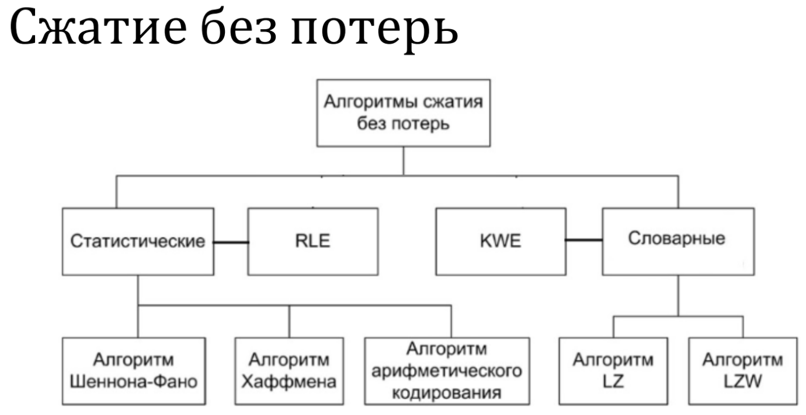
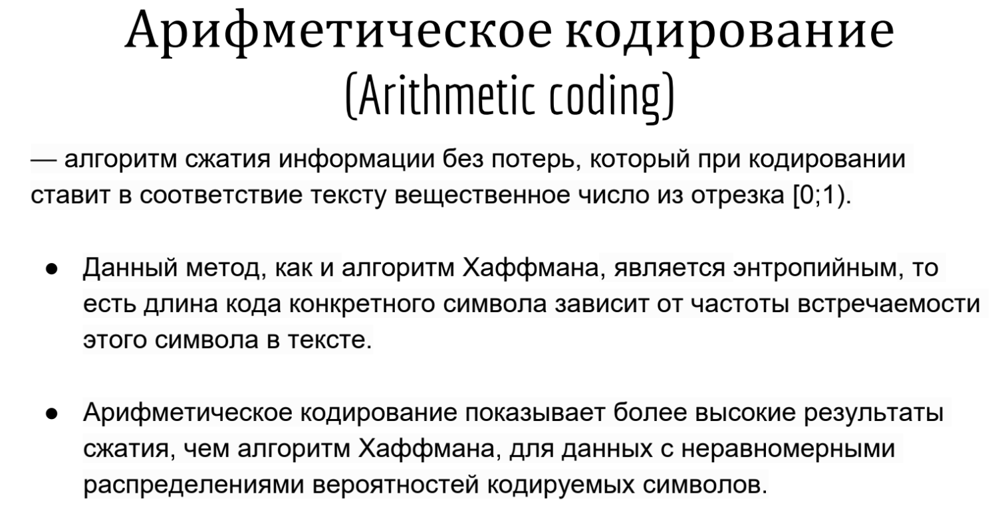
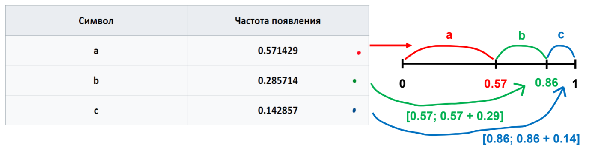
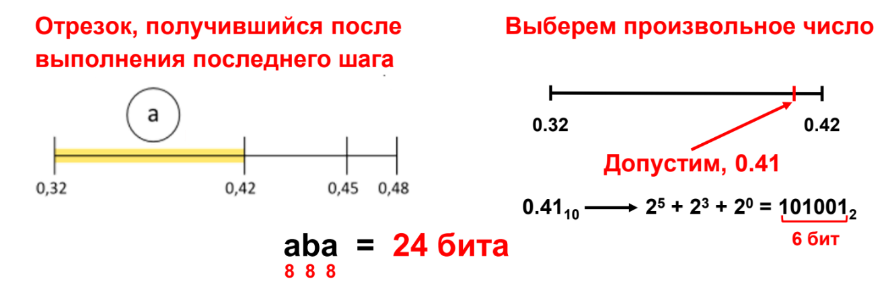
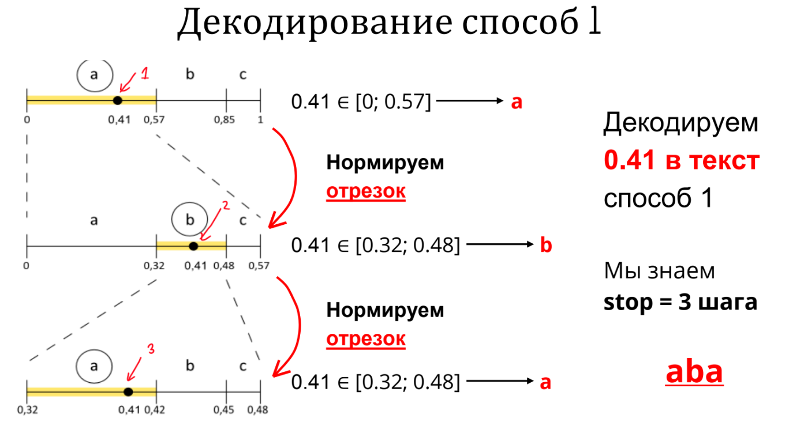
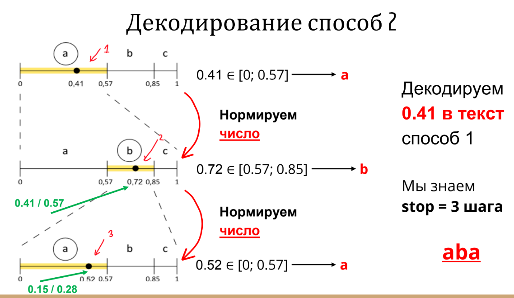
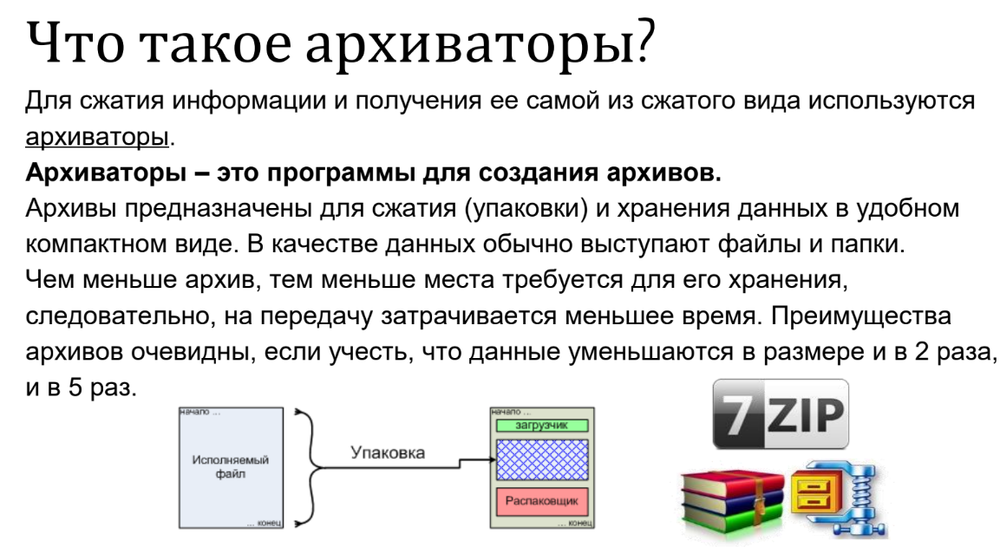
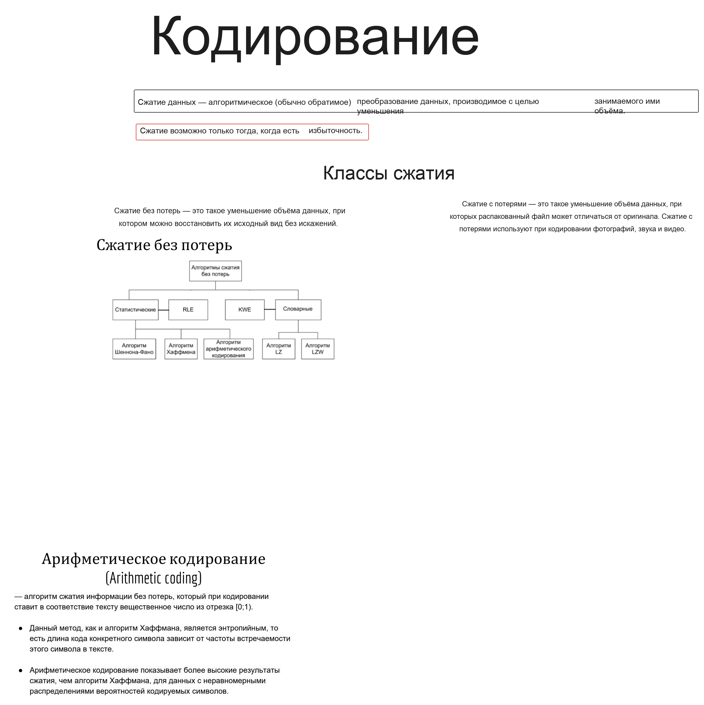
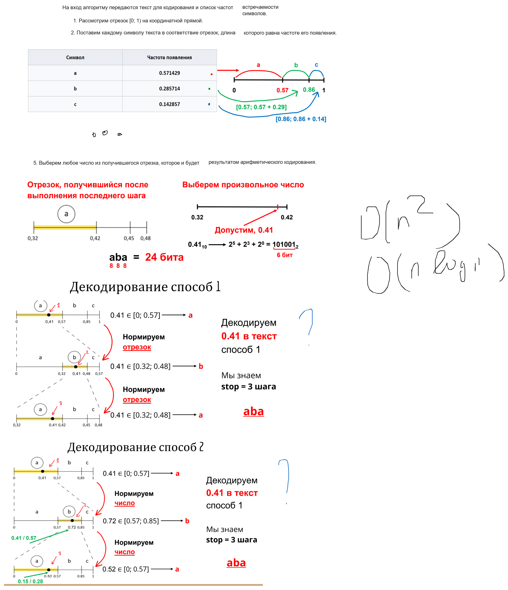
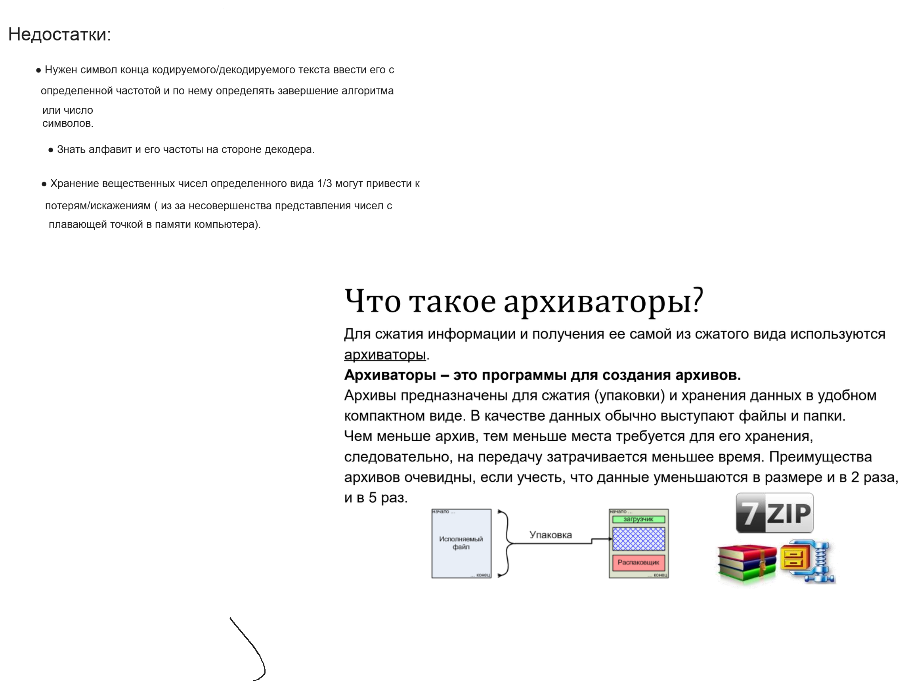

Сжатие данных и арифметическое кодирование
Хаффман, арифметическое кодирование и исправление ошибок.
Кодирование без потерь
Хаффман строит двоичное дерево снизу вверх: объединяет два узла с минимальными частотами, пока не останется корень. Путь от корня задаёт код символа. Ни один код листа не является префиксом другого, поэтому поток можно разбирать однозначно. Для k символов построение дерева через кучу требует O(k log k).
При частотах A=5, B=2, C=1, D=1 возможен код A→1, B→00, C→010, D→011. Для декодирования нужно знать дерево или эквивалентное описание кодов.
Арифметическое кодирование начинает с интервала [0, 1), а каждый символ выбирает пропорциональный вероятности подынтервал. Декодер использует ту же модель и длину сообщения или символ конца. Практические реализации используют конечную точность и нормализацию. Сжатие с потерями допускает отклонение от исходного сигнала, например при кодировании звука.
Код Хэмминга
Контрольные биты позволяют найти позицию одиночной ошибки по синдрому. Обычный код Хэмминга исправляет одну ошибку. Для одновременного исправления одной и надёжного обнаружения двух ошибок используют расширенный код с дополнительным битом общей чётности.
Материалы и примеры по пунктам
Кодирование
Сжатие данных — алгоритмическое (обычно обратимое)
преобразование данных, производимое с целью уменьшения
занимаемого ими объёма.
Сжатие возможно только тогда, когда есть
избыточность.
Классы сжатия
Сжатие с потерями — это такое уменьшение объёма данных, при
Сжатие без потерь — это такое уменьшение объёма данных, при
которых распакованный файл может отличаться от оригинала. Сжатие с
котором можно восстановить их исходный вид без искажений.
потерями используют при кодировании фотографий, звука и видео.


На вход алгоритму передаются текст для кодирования и список частот
встречаемости символов.
-
Рассмотрим отрезок [0; 1) на координатной прямой.
-
Поставим каждому символу текста в соответствие отрезок, длина
которого равна частоте его появления.

- Выберем любое число из получившегося отрезка, которое и будет
результатом арифметического кодирования.



Недостатки:
● Нужен символ конца кодируемого/декодируемого текста ввести его с
определенной частотой и по нему определять завершение алгоритма
или число символов.
● Знать алфавит и его частоты на стороне декодера.
● Хранение вещественных чисел определенного вида 1/3 могут привести к
потерям/искажениям ( из за несовершенства представления чисел с
плавающей точкой в памяти компьютера).

Схемы и рукописные примеры


